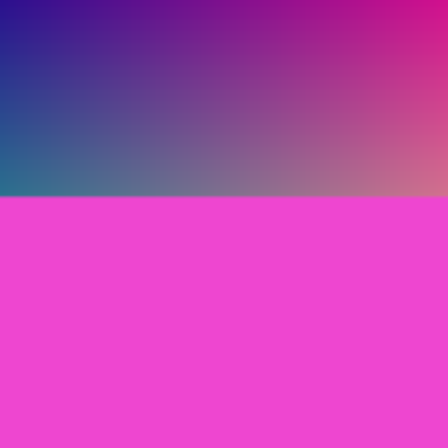
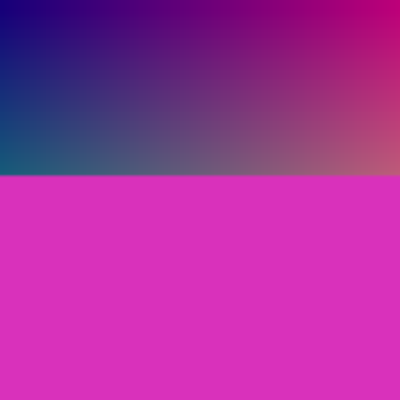
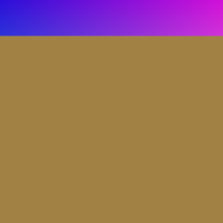
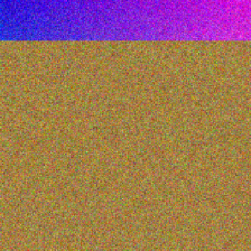
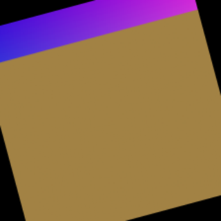
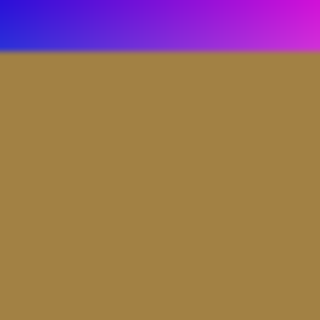
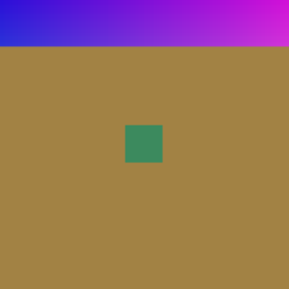
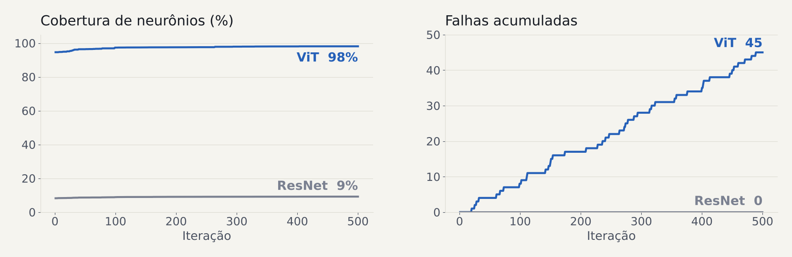

Testes de software · Machine Learning
ResNet-50, ViT-Base e o tokenizer do DistilBERT testados com fuzzing guiado por cobertura
Conteúdo gerado por IA (Claude): código, testes, textos e slides. Revise antes de usar ou apresentar.
28 de outubro de 2026 · leonardorh18/ml-fuzzy-tests
O que é fuzz testing
Em vez de escrever casos de teste à mão, um programa (o fuzzer) gera milhares de entradas automaticamente e observa o que acontece.
Exemplo clássico
Um leitor de PDF recebe milhares de arquivos levemente corrompidos. Um deles faz o programa travar: é um bug encontrado antes que um usuário ou um atacante o encontre.
aleatória ou mutando uma que já existe
e medir o que ele exercitou
a regra que decide é o oráculo
guiado por cobertura; repete milhares de vezes
Conteúdo gerado por IA · Fuzz Testing em ML · 2
Fuzz testing em machine learning

Original
ViT: classe 614

Mutada (brilho)
ViT: classe 727
Diferença ×6
≈ 0,08 por pixel
Entrada
imagens e textos levemente alterados
Oráculo
o modelo raramente trava; falha é mudar a predição sem motivo
Cobertura
neurônios ativados, não linhas de código
Exemplo real do nosso teste (iteração 20) · classes numeradas porque o ViT rodou com pesos aleatórios · Conteúdo gerado por IA · 3
Como funciona · cobertura de neurônios
nunca ativado
já coberto
novo neste mutante
Esquema ilustrativo de uma camada
um canal de um bloco da ResNet ou uma dimensão de um bloco do ViT
alguma entrada já o ativou acima de 50% do máximo da camada
mutante sem falha que acende neurônios novos volta ao corpus e gera novos mutantes
Ideia do DeepXplore (2017) e do TensorFuzz (2019)
Conteúdo gerado por IA · Fuzz Testing em ML · 4
Modelos usados
Para que serve: dizer qual objeto aparece numa foto, entre 1000 classes do ImageNet.
Como: rede convolucional de 50 camadas; filtros detectam bordas, texturas e formas.
foto de um cachorro
→ "golden retriever"
Para que serve: a mesma tarefa da ResNet, com as mesmas 1000 classes.
Como: corta a foto em quadrados de 16×16 pixels e usa atenção, a técnica dos modelos de linguagem.
foto de uma xícara
→ "coffee mug"
Para que serve: quebrar texto em pedaços (tokens) e trocar cada um por um número que o DistilBERT entende.
Por que testar: todo texto passa por ele antes do modelo.
"the cat is sleeping"
→ [CLS] the cat is sleeping [SEP]
ResNet e ViT fazem a mesma tarefa com arquiteturas diferentes, o que permite comparar as duas com as mesmas imagens.
Exemplos de entrada e saída ilustrativos · Conteúdo gerado por IA · Fuzz Testing em ML · 5
Como geramos os testes · imagens

original

ruído
brilho
contraste

rotação

blur

patch
1. Sorteia uma imagem do corpus
2. Aplica uma mutação aleatória
3. Corta cada pixel a ±0,08 da original
4. Classifica e mede neurônios
5. Classe mudou? Falha, salva a imagem
Mutações no máximo da faixa, antes do corte em 0,08 · semente sintética usada no teste · Conteúdo gerado por IA · 6
Como geramos os testes · texto
bytes gerados
0a 91 01 00 00 00
viram entrada
max_length=2, 'Ƒ'
tokenizer devolve
[CLS] x [SEP]
a chamada nunca pode quebrar
tokens ≤ max_length; aqui, 3 > 2
todo número existe no vocabulário
decodificar e codificar de novo não muda mais nada
O Atheris guarda as entradas que executam linhas novas do código Python do tokenizer e muta a partir delas: é o fuzzing clássico, guiado por cobertura de código.
Exemplo real: a entrada que encontrou a falha · Conteúdo gerado por IA · Fuzz Testing em ML · 7
Configuração do experimento
| Parâmetro | Valor |
|---|---|
| Iterações | 500 por modelo |
| Sementes | 6 imagens sintéticas |
| Perturbação máxima (ε) | 0,08 por pixel |
| Limiar de cobertura | 0,5 |
| Tempo em CPU | 17 s ResNet · 43 s ViT |
| Tokenizer | 61 s rápido · < 1 s Python |
O ambiente não acessava o Hugging Face. Os modelos rodaram com a arquitetura real e pesos aleatórios, e o tokenizer com um vocabulário local.
O teste prova que o método funciona; os números não medem a robustez dos modelos treinados.
Conteúdo gerado por IA · Fuzz Testing em ML · 8
Resultados · Imagens
45 / 500
0 / 500
brilho
41,8%
contraste
3,7%
rotação
2,1%
ruído
1,5%
patch
1,1%
blur
0,0%
Conteúdo gerado por IA · 500 iterações, ε = 0,08, pesos aleatórios · Fuzz Testing em ML · 9
Resultados · cobertura × falhas

A cobertura do ViT já começou em 94,6% e a da ResNet travou em 9%. As falhas do ViT cresceram em ritmo constante, sem acompanhar a cobertura (correlação de −0,31).
Fonte: log.csv das execuções de 500 iterações · Conteúdo gerado por IA · Fuzz Testing em ML · 10
Resultados · Tokenizer
Python puro · max_length=2 · texto 'Ƒ'
[CLS] x [SEP]
3 tokens: falha, o truncamento desiste
Rápido (Rust) · mesma entrada
[CLS] [SEP]
2 tokens: correto
| Execução | Execuções | Cobertura | Falhas |
|---|---|---|---|
| Rápido (Rust) | 258.995 | 141 | 0 |
| Python puro | ~470 | 295 | 1, em < 1 s |
Cobertura = trechos de código Python vistos pelo Atheris · vocabulário local · Conteúdo gerado por IA · 11
Conclusão
| Pergunta | Resposta |
|---|---|
| Mudanças pequenas trocam a classe? | Sim no ViT: 9% dos mutantes, com ε = 0,08 |
| Qual mutação quebra mais? | Brilho: 42% de falha no ViT |
| ResNet ou ViT é mais robusto? | Inconclusivo: pesos aleatórios |
| Mais cobertura, mais falhas? | Não: correlação de −0,31 |
| O tokenizer aguenta qualquer texto? | O rápido sim; o em Python estoura o max_length |
Próximo passo: rodar com os pesos reais do Hugging Face e fotos de verdade.
Conteúdo gerado por IA · github.com/leonardorh18/ml-fuzzy-tests